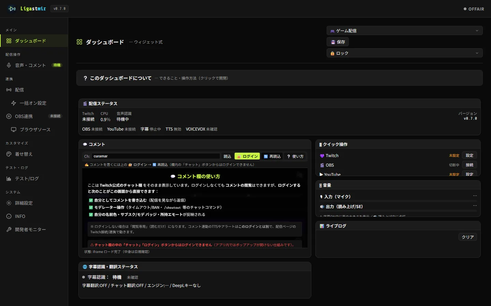
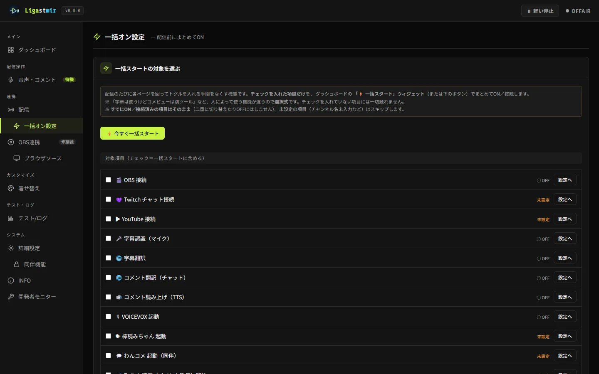

配信前チェックとダッシュボード
Ligastmir（無料）は、配信の操作と状態を1画面にまとめた「ダッシュボード」を中心に動きます。
配信前の接続チェック、使う機能の一括スタート、定期コメント、演出のテスト発火まで——
OBSやツールをあちこち触らずに、手元でまとめて整えられます。
ウィジェットは自由に配置でき、自分の配信スタイルに合わせられます。
実際の画面


ダッシュボードでできること
- 配信前チェック — Twitch / YouTube / OBS / 読み上げ の接続状態を一目で確認。「未接続」がすぐ分かります。
- 一括スタート — 使う機能（コメント取得・読み上げ・翻訳・VOICEVOX・棒読みちゃん・OBS等）をまとめてON。
- 配信制御 — OBSの配信開始/停止・シーン切替を、OBSに戻らず手元から。
- 定期コメント — 一定間隔・コメント数ごとに自動でメッセージを流します。
- 演出のテスト発火 — フォロー・サブスク等のアラートを、実際に来る前に試せます。
- コメント欄の埋め込み — 配信を見ながらコメントの確認・返信ができます。
使い方（3ステップ）
配信スタイルを選ぶ初回のようこそ画面で「ゲーム配信」「雑談配信」などを選ぶと、それに合ったウィジェット配置になります。あとから変えても、フル編集で好きに並べ替えできます。
配信前に接続を確認する配信ステータスのウィジェットで、使う予定の接続が緑になっているか確認します。
一括スタートで準備完了「一括オン設定」で選んでおいた機能が、ボタン1つでまとめて立ち上がります。
ウィジェットは足し引きできます。 「軽い停止」や「配信制御」など、既定では非表示のウィジェットも、フル編集の「ウィジェット」欄から追加できます（保存済みのレイアウトは壊れません）。
うまくいかないとき
接続が「未接続」のまま
各ページ（配信・OBS連携など）で接続操作をしてください。Ligastmir は勝手に外部へ接続しません——使う時に明示的にONにする設計です。→ 使い方ガイド
ウィジェットが見当たらない
ロックを解除して「フル編集」→「ウィジェット」欄から追加できます。